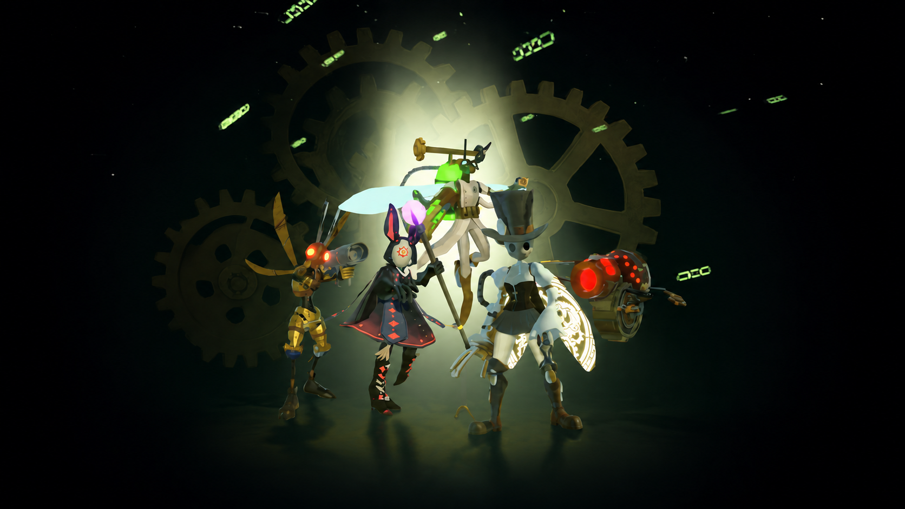
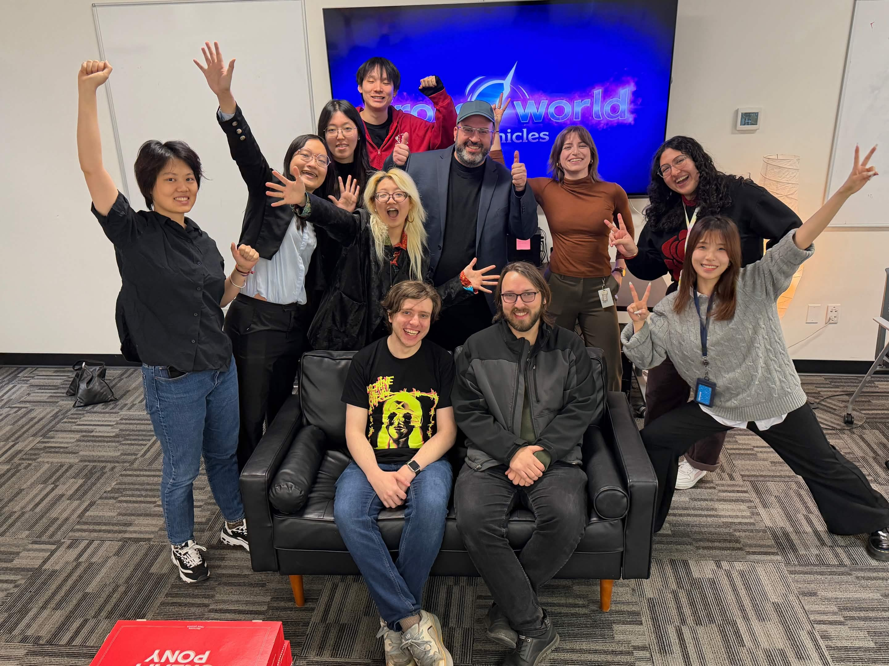
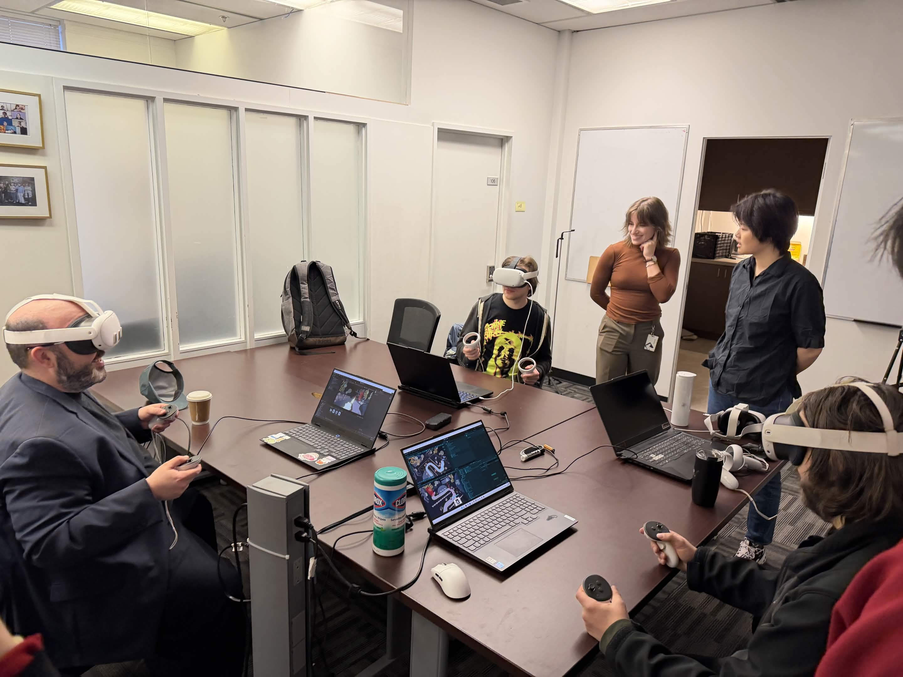
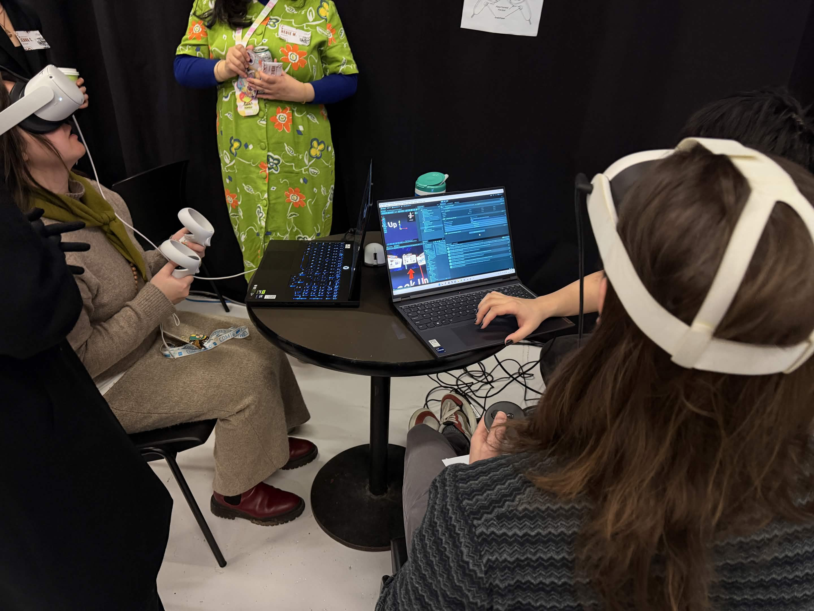
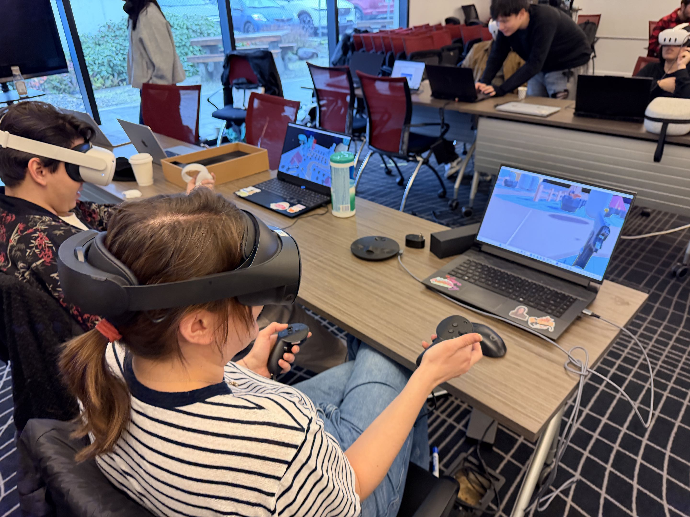
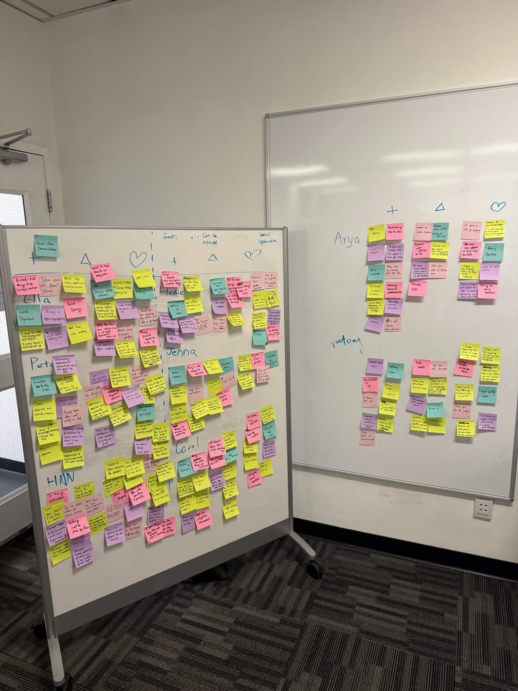

Crossworld
Chronicles
A cooperative asymmetric VR dungeon crawler built in 12 weeks for Coal Car Studio, within two players, two roles, one shared world.
Role & Responsibilities
As the sole Project Manager, I owned production from discovery through client handoff — bridging design, development, art, and playtesting across an 8-person interdisciplinary team.
Production Leadership
Led sprint planning, retrospectives, and milestone tracking. Maintained visibility across all disciplines throughout delivery.
Client & Stakeholder Comms
Primary bridge to Coal Car Studio. Ran weekly demos and translated technical discussions into actionable production tasks.
Scope & Risk Management
Defined MVP vertical slice scope and dynamically re-prioritized around technical feasibility as multiplayer complexity grew.
Playtesting & Iteration
Planned and ran both test rounds. Synthesized findings into sprint-level iteration priorities across teams.
Cross-Disciplinary Sync
Maintained alignment between gameplay, UI, art, and VR interaction pipelines under shifting technical constraints.
Documentation & Handoff
Oversaw all project docs and delivered the final prototype and materials package to the client at sprint close.

Team with Coal Car Studio client
Development Sprints
Discovery & Alignment
Weeks 1–2
Established team charter and sprint cadence aligned with client meeting rhythm.
Core Gameplay Proto
Weeks 3–4
Coordinated parallel prototyping across combat and strategy systems.
Multiplayer Integration
Weeks 5–6
Unexpected networking complexity required restructuring task ownership and increasing client comms frequency.
Art & System Integration
Weeks 7–8
Coordinated implementation handoffs between artists and developers daily.
External Playtesting
Weeks 9–10
Synthesized testing data into a prioritized iteration list — shipped improvements within the same sprint.
Delivery & Handoff
Weeks 11–12
Prepared playable prototype, presentation, and full documentation package for Coal Car Studio.

Client testing session
Problem → Response → Outcome
The biggest challenge was turning an ambitious multiplayer VR concept into a clear, playable experience within a 13-week production timeline. The project included VR dungeon crawling, strategist gameplay, tower defense, enemies, maps, resource systems, UI, onboarding, and additional gameplay ideas. As Project Manager, my focus was to help the team define scope, align disciplines, and make production decisions that protected the core experience.
The original concept included more features than a 13-week multiplayer VR production could realistically deliver.
Helped the team clarify the MVP and protect the core cooperative loop: VR Explorers fighting enemies, the Strategist placing turrets, resource management, base health, and win/loss conditions. Reduced secondary features, including the boss encounter, to keep production focused.
Delivered a cohesive vertical slice with a complete multiplayer gameplay loop, instead of an overextended feature set.
As the project evolved, the team needed to decide what to improve, what to simplify, and what to stop building.
Used internal reviews, client feedback, and playtest findings to group issues into practical production priorities: readability, pacing, onboarding, UI clarity, and technical risk.
Improved player understanding through clearer feedback, adjusted spawn pacing, stronger onboarding support, and more focused iteration.
VR interaction, strategist gameplay, UI, level design, and art pipelines were tightly connected, creating many dependencies across the team.
Maintained shared documentation, task boards, meeting notes, and asset tracking to make progress, blockers, and ownership visible across design, development, and art.
Helped the team stay aligned on priorities, dependencies, and delivery targets throughout production.


External playtesting rounds
What I Carry Forward
01
Scope as a Strategic Tool
Strong scope management is not simply about reducing features. It is about protecting the experience the team is trying to deliver. I carry forward an MVP-first approach that keeps the core gameplay loop visible and gives the team a shared foundation for evaluating new ideas, trade-offs, and production risk.
02
Prioritization Through Evidence
Feedback becomes valuable when it supports clear decisions. I carry forward a structured approach to evaluating input through player impact, production effort, technical risk, and alignment with the project vision. This helps the team focus on changes that meaningfully improve the experience without disrupting delivery.
03
Visibility Creates Alignment
Cross-discipline collaboration works best when ownership, dependencies, and blockers are visible. I carry forward a transparent production structure that gives design, development, art, and UI teams a shared understanding of priorities while preserving individual ownership and flexibility.

Team 360 review activity